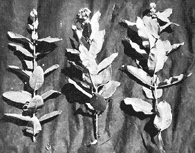

I hope no one who reads this article will ever go to bed hungry again. There is free food all around us. Here in Wisconsin it is impossible to walk through any field or forest and not spot dozens of edible wild plants. There are acorns, cattails, milkweeds, dandelions and many others. Look closely and you'll also see many edible and unprotected animals and birds. Turtles claw along sandy roads. Woodchucks peer from grassy knolls. Gophers sit up like tent pins. Crows and blackbirds whisk overhead. And, every time you pass a pond or river, you are passing fish and clams and crayfish and frogs.
I speak from experience, having studied wild foods for years and having spent many weekends living entirely on foraged fare. Last year I passed my final exam by living the entire month of August on wild foods alone. All my foraging was done on weekends and after a regular eight hour work day, and I never felt a serious hunger pang. Matter of fact, I gained two pounds. This article details some methods and recipes for finding and using wild foods.
One thing to watch for is the tendency of a year to produce bumper crops of a food source. Last year, here in Southern Wisconsin, it was acorns. Acorns fell to the ground so thickly that even a multitude of squirrels could not begin to store them. This spring, when the snow melted, so many acorns lay on oak shaded lawns that homeowners earnestly discussed ways of raking them. To me, of course, it was all manna from Heaven.
Experts say there are 54 varieties of oak in the United States and most bear acorns. Nearly all can be classified in either the White or the Black (sometimes called Red) Oak group. The White Oak family matures a sweet acorn in one year while Red Oak acorns grow more slowly, mature when they are two years old, and are usually more bitter. In our area, we find the best-eating acorns by selecting the biggest ones. All acorns are edible and the biggest ones are usually the sweetest.
The degree of bitterness in acorns is caused by the amount of tannin in the meat of the nut, and tannin is soluble in water. To make acorns edible, then, first peel or shell the nut.
Peeling can be done with a wide variety of gadgets. One of the best combinations for small amounts is a nut cracker and nut pick. A hammer and helper are advised for larger operations! The helper sorts meat from shells after the hammer has smashed them.
When you have separated a goodly amount of acorn meat from the shells, washing out the tannin is next. You caji do this Indian style if you have plenty of time. Smash or grind the meats into fine meal and then build a leach plant. An Indian leach plant resembles an eagle's nest and is made by draping a cloth over a loose hollow of substantial twigs. The cloth is pushed into a lining for the nest and acorn meal is spread in a half inch layer over the bottom. Slowly pour water over this layer until the meal is sweet or neutral to the tongue.
Two things to keep in mind when using this method are: (1) Locate the leach plant on a peak or rock and (2) locate it beside water. You want plenty of water available, but you want it to be able to drain away when it has filtered through the meal.
A second and faster method of leaching meal is to grind the acorns and drop them in boiling water. When the water gets very dark, dump it out, add fresh water and boil agan. Two or three changes of water will usually be enough. Place the meal in a mesh strainer or porous cloth bag and dangle it in an unpolluted stream for about twelve hours and the processing is finished for you with hardly any effort.
When the acorns are processed, dry and grind them again. This time grind them really fine and you will have a good brown flour that can be used for most cooking and baking. Some recipes that turn me on are Acorn Bread, Acorn Flapjacks and Acorn Cake.
Acorn bread is made by mixing four cups of acorn flour with three tablespoons of butter, 2/3 cup of sugar, three teaspoons of baking powder, 1-1/3 teaspoon of salt, two eggs and two cups of milk. Mix the ingredients in a large pan, beat well and spoon into bread pans. Bake at 350° for 20 minutes.
Flapjacks are made by adding one teaspoon of baking powder, dash of salt and one egg to one cup of acorn flour. Add milk until this mixture pours well and bake it on a smoking griddle. Serve hot with butter and jelly.
Acorn cake beats any prepared mix I've ever eaten. It's made by mixing one cup of wheat flour and one cup of acorn flour with 1/2 cup butter or margarine. Beat this together and then add one cup sugar, three eggs and one cup milk. Mix very well and bake at 350° for 3/4 hour.
Sometimes you will want to enjoy acorn meats in large natural chunks. When you do, boiling is the best way to leach them. After this processing, a very good roasted nut can be made with whole, processed acorn meats by additionally boiling them in heavy salt brine for 15 minutes. Remove from the brine, dry the kernels on a napkin and then roll them till toasty crisp in a frying pan containing one quarter-inch of bubbling hot vegetable oil.
Whole processed acorn meats also can be pickled by covering them with hot vinegar and pickling spices. Two months in a jar does the delicious trick.
I have beaten acorn chunks, like nut meats, into cakes and muffins and found they were more than palatable. I also have parched acorns by the same methods used to make the roasted nuts and then boiled them until they dissolved. Result: Acorn coffee.
The possibilities for these plentiful nuts are almost endless. If you decide to experiment with acorns, one good way to insure at least partial success is to substitute acorn flour for wheat or rice flour in any cookbook recipe.
Acorns also make good animal food. I raised a brood of Mallard ducks on oatmeal, green grass and acorns . . . and they `et good. Hogs gobble acorns down and produce the best tasting pork imaginable. A commercial farmer, however, once told me that he had a heifer die from eating acorns. This is the only negative report I've ever heard on the subject.
No one should have trouble picking up all the acorns he wants in any oak woods. We've averaged a bushel an hour in good picking.
Acorns can be stored for winter use. I've frozen them and they kept well. I've also stored the nuts in tight-lidded glass jars outside in the unheated garage and used them about January. They seemed better for the storing.
The Indians reportedly buried acorns in mud in the fall for use the following spring. I've never tried this yet but I suspect the nuts might wind up tasting a little like decayed mud.
If acorns are stored for long periods where it is warm, many of the shells will be pierced by a tiny hole and hollow. This is caused by insects. The hollow acorns will bob merrily to the top of a container of water while healthy acorns sink, however, so it's easy to sort good from bad.
Versatile as acorns are, there is another wild food that may be even better: The cattail. This plant is corn, potato, salad and flavoring all rolled into one.
Experts say there are two kinds of cattail: Narrow leafed (Typhus Angustifolia) and broad leafed (Typhus Latifolia) and that the narrow and broad leafed have interbred to form hybrids.
Any observer can vouch for the fact that the leaf widths are different. Here in Wisconsin, they grow up broad leaf next to narrow leaf in perfect integration. When the pollen is thick on the bloom spikes and the wind blows, the air will be yellow. It's easy to see that hybridization is probable.
Someone has called cattail "the supermarket of the swamps" It is more than that. With a few tools, I believe I could go into a cattail marsh at any season of the year and live with just the cattail furnishing both food and shelter.
Cattails grow in marshes and other wet places. I have seen their corn-like leaves in otherwise dry hayfields where just a pocket of constantly damp ground was located; I have also seen them holding up Red-winged Blackbirds over three feet of water. It has been my experience that cattails growing on drier ground provide better food products from the roots, and poorer above-ground provisions.
Keep your eyes peeled for cattails in early spring when they are just starting to sprout. The miniature leaves and white stalks are good "munching" food, sometimes called Cossack Asparagus. Just pull out a stalk by gasping the leaves and chomp on the tender white stem. Your taste buds will tell you at what point to stop eating and pull another one.
After you have consumed your fill of Cossack Asparagus, carefully run your hand down a stalk under the mud, until you feel the rope-like root branching out. Reach along this as far as you can, set yourself and heave - root, plant and all - out of the mud. Swish the root around in water until you have washed the mud away and then closely examine the sub-surface part of the plant. A cattail root looks like a brown rope out of which branch new, white tapering shoots. Every bit of this root, except the skin, is edible. The new shoots are more than edible. They are crisp and almost too good to be true. If the water is clean, bite one of the shoots right there. It will be the tenderest raw plant you have ever tasted.
When you've finished eating raw shoots, pull up about a bushel of roots and take them home. Keep these roots wet, however, or they'll become hard to peel.
When you get home snap the white shoots off, put them in a container and carefully peel the brown roots. Use a sharp knife and be very sure to keep the roots wet. They are hard to peel otherwise.
When you have the bushel peeled, find a large container and fill it with cold, clean water. Dump the peeled roots in and mash them. A kraut stomper or a large stick or a potato masher works . . . anything that will smash the roots.
When the roots are crushed, reach down, get a bundle and tear them apart. Wring and tear until you have nothing left in your hands but what looks and feels like a bundle of string. This is the fiber of the roots. Tear and roll the roots between your hands now until every bit of pulp is gone from the fibers and then remove the fibers from the water.
What you have left will look like sewer water . . . but don't lose heart. Instead, strain the water through cloth until you have a lump of pulp and starch left. Put fresh water on the pulp and strain it again. Do this three times if you have to but stop when the pulp is nice and white.
This pulp is pretty good flour at this stage but I like to dry it and run it through the trusty grinder until all the pieces are reduced to powder. Then I can use it as I see fit. It has been my experience that this is the only way to make good cattail flour.
Cattail flour tastes a lot like oat meal to me and my main use of it has been for Swamp Bread. Add one large teaspoon of baking powder and 1/4 teaspoon of salt to 1/2 cup cattail flour. Mix in water until it forms dough. Make a patty and fry in bacon grease until golden brown.
If you watch cattails closely the last of June you will notice a green bloom spike emerging. When this spike is four to six inches long it is ready to be picked. Handling these spikes is like peeling miniature ears of corn. Snap them off and peel away the green outer layer of husk. Beneath will be green flower buds, underlayed with yellow. Drop the buds in boiling, salted water for about 10 minutes and eat them hot, coated with plenty of butter or grease and seasoned. I find I can gather enough cattail spikes in an afternoon to last us throughout the year.
Later in the season the green spikes will open and yellow pollen will stand thickly from every spike. This pollen is a fine foodstuff indeed. I gather it by taking a pail and taping a newspaper across the brim leaving about 1/4 of the diameter open. Gently bend the pollen-filled spike into the opening and shake the golden treasure into the bucket.
Bannock will never be as good any other way as with this recipe: Blend 1/2 cup cattail pollen into 1/2 cup wheat or acorn or cattail flour. Add one teaspoon of baking powder, a teaspoon of s ugar and a dash of salt.
Mix in enough water to make dough and mold it into a patty. Bake in a low oven or fry in a frying pan until golden brown.
I have also mixed cattail pollen with beef bouillon and new cattail root shoots to produce an excellent soup. The pollen imparts a "butter" color and a corn taste to anything in which it is used.
Pollen muffins are tasty spread with butter and jelly. You can make them by substituting pollen for half the flour in an ordinary recipe or by using our favorite formula: Mix one cup of cattail pollen and one cup of white wheat flour. Add 3/4 teaspoon of salt, 1/4 cup of sugar, three teaspoons of baking powder. Mix this well and then add two eggs, two tablespoons of melted butter and 3/4 cup milk. Pour into muffin tins and bake at 400° for twenty minutes.
I tried storing pollen but it developed mold after a few days. It probably could be frozen, though, if one wanted it for winter use.
Where the cattail roots join the plant is a lump the size of a small potato. I cut out this lump and boil it just like a potato. I have roasted it and I've sliced it and fried it. It is passable each way. Therefore I have named it the potato lump. Try it sometime.
Early in spring before the cattail has grown enough foliage to wave in the wind, another wild plant is ready to furnish us with food and drink. It's the familiar dandelion, which starts growing leaves underground even before the last frost is gone. Suddenly, on one of the first warm days, it shoots green sprouts to the surface.
When leaves are about as tall as a cup it is time to harvest dandelion greens. Snap a pan of leaves off their base and take them to water. Spread them out and discard all discolored leaves and foreign matter. Wash the greens twice to remove all the grit, cover them with water and boil for about five minutes. Serve hot with butter, salt and pepper.
Raw dandelion leaves, mixed with lettuce, makes a good salad. Use only enough dandelion leaves to give the lettuce some taste however, as uncooked dandelion greens are inclined to be bitter.
Below the leaves and above the roots is a white crown. This crown is a good boiled vegetable. It is best harvested by cutting the leaves off where they start to turn white and cutting the root off where it starts to turn brown. The middle part is the vegetable. Wash this crown very well to remove any grit and boil it for about five minutes. Serve hot with butter, salt and pepper.
Under the crown is the brown skinned roots. Thev are usually forked and get as large as your thumb. The roots can be used for a vegetable or a drink base. To make a vegetable, peel every bit of brown skin away and slice the white cores. Boil until tender in salted water. Serve hot with butter.
The drink is made by roasting peeled roots in a low oven until they are as stiff and brittle as sticks. Remove the roasted roots and grind them in a food grinder to make powder. Mix one heaping teaspoon of the root powder to one cup of water and boil for about three minutes.
After the flower comes out it is time to leave dandelions and look for other sources of food. It happens that one plant is just coming into its own at this time in Wisconsin. If I look carefully along the roadsides, open fields and even in sunny spots in the forest I will see a well known fuzzy green plant happily producing food: The common milkweed.
W hen the milkweed is about six inches tall it is a good green. Later the flower buds will hang on most every plant and they are good boiled like broccoli. Still later these buds will turn to flowers, and then to seed pods. The tender young seed pods are the best eating imaginable.
One handicap milkweed has is the sticky, white sap that flows through every part of the plant. This sap is bitter and must be flushed out before milkweed is edible. Flushing out the sap, however, is not too difficult.
Drop the plant parts in a proportionately large kettle of boiling water. The water will stop boiling. When it starts again, drain it and add fresh water. When the second water starts to boil, drain and add a third water. Let this third water boil for about three minutes. Drain it, fill the pot again and let the milkweed boil for about ten minutes. The processing is now complete. You will no doubt notice the deep emerald appearance of these fine natural foods.
If we have processed milkweeds that were young and under six inches tall we have greens. Drain, add a pat of butter for each cup of greens, season and serve hot. The flower buds are served the same way; drain, butter, season and serve. The seed pods are good hot and buttered. They are also good covered with gravy, like potatoes, or they go very well in clam chowder.
Fresh water clams (mussels) abound in the streams and lakes near my home so I use them often. Clams are a little hard to find, even in good clam country, unless you know how to locate them. I usually just look along the banks of streams until I find clam shells. Two or three shells in one place probably means a clam bed is located nearby. The shells are deposited on the banks by raccoons who know the location of these beds as well as we know the location of a supermarket.
After I have found two or three shells I wade out into the stream and start feeling for the clams underwater. This process takes some familiarization and you will probably lift many clam-sized rocks at first. Soon, however, you will start to know the feel of a clam shell and you will have no trouble locating all you can use. For one cook-out, my son and I harvested 85 platter-sized clams in about a half hour last summer.
Lake clams are usually located the same way or by spotting their tracks in the sand. A clam track looks like someone drug the point of a stick along the beach and it will sometimes end abruptly. Dig at the end of the track and you will quite often find your clam completely buried.
Here's a good clam chowder, milkweed pod recipe: Open four large clams. I do it by sticking a knife in past the lips and cutting the muscle. Catch all the juice that runs out of each clam as you perform this operation. When you have the shell open, cut the meat loose, pinch out the dark stomach and discard it. The clam meat is then passed through a grinder until it is the consistency of hamburger. Strain the juice through a fine cloth and set it aside.
Add 1/2 cup of diced onion and a cup of processed milkweed pods to two cups of clam meat. Barely cover with water and simmer for 45 minutes. Remove and add one cup milk, the clam juice we set aside, and a tablespoon of butter. Return to the fire and warm up to the simmering stage. Remove and serve very hot with crackers.
When you are hunting for clams among rocks you will no doubt occasionally notice a small dark shape hurtling backwards through the water. If you are fast enough, grab these shapes. They are crayfish, crawdads or crabs, depending on your location. I have snatched hundreds by placing one open palm slowly behind them and feinting with the other at their head. They will jet backwards into the open palm. Of course, when you catch them this way, they catch you too with their lobsterlike claws. I have never caught one with strength enough to break the skin, however.
Crayfish can be trapped, caught with hook and line or netted. The most effective way is netting. -Drag a minnow seine slowly over a creek bottom in crayfish habitat and you will catch them by the dozens.
Cook crayfish by dropping them in boiling water that has been liberally salted and dosed heavily with caraway seed. When they are done they will be bright red. Remove and cool. Most of the meat is in the tail. Grab the tail between your thumb and forefinger and twist it gently. It should break from the body. Open the shell of the tail then and thumb out the vein that forms a black line down the center. The white meat you have left can be compared to and eaten like shrimp or lobster.
I either dip crawdad tails in a spicy commercial shrimp dip or I roll them in batter and deep fry them. The batter is made by beating one egg with two tablespoons of seasoned milk. Roll the crayfish tails in this and then in cornmeal or white flour. Fry in bubbling fat for about three minutes. Crayfish are widely eaten and any good cook book should contain other recipes.
While feeling for clams you may also find a turtle. The snapping turtle, of course, is the biggest and the best. But don't let one bite you. I don't think they will bite while they are submerged though as I have felt them in the water, traveled my fingers gently around their shells and grabbed their tails without ever being attacked. Once you lift them clear of the water, however, hold them away from your legs. They are grouchier and more agile than a turpentined terrier,
I prepare a snapper by chopping off its head and hanging it by the tail. to bleed overnight. The next morning I chop off the claws at the last joint and lay the turtle on its back.
Use a sturdy sharp knife to cut all around the skin where it joins the upper shell. Cut deep especially at the tail. If you have done this correctly, you now can lift the entire body away from the upper shell. Skin out the neck and the legs and save the eggs, fat and liver for stew. Discard the rest. Be sure to cut the green bile sack away from the liver, though. Located in the very top of the upper shell is a strip of white meat that it is worth cutting through to the rib-like strips of bone to get.
Cook snapper anyway you see fit. Roll it in flour, season and fry like chicken. Bake it or make stew.
Good turtle stew is made by parboiling the meat for twenty minutes in salted water containing a cup of diced celery and carrots. After twenty minutes drain this water and vegetables and throw them away. Add fresh water, the liver and immature eggs. Crack the rubbery shells of white eggs and add them to the water also. Continue boiling until the meat is tender. Add enough milk to whiten the soup, drop in a pat of butter for each cup of liquid, season and serve.
Other fresh-water foods I have eaten are fish and frogs. Thousands of volumes have been written on fishing and l could not begin to expand on these except to say, when fishing for food use natural bait - such as worms - and use as many hooks as the law allows. Get familiar with spawning movements such as the sucker runs up small streams in the spring. Carp also come to the shallows to spawn and smelt congregate on the shores of the Great Lakes.
I catch frogs by dangling a fishing fly in front of them or I nab them by hand. Hand capture is best accomplished by an almost horizontal movement towards the frog's head - rather then a vertical slap. Secure a frog by some method and get familiar with his motion capabilities. Thereafter, catching them will be as easy as picking up a stick.
Frog legs are skinned and fried. Deep frying with the crayfish batter is as good a way to cook them as any.
When you get tired of a fresh-water diet, there are many other food sources that are un protected and scorned by the Establishment. Perhaps I'll have the opportunity of presenting some of them in future issues.
|
... and photographed |
 milkweed in bud, blossom and pod stage |
... and in line detail |
|
a selection of good freshwater eating the Establishment has forgotten |
|
|